Official Releases
Introduction
Introduction
The Official Releases page is dedicated to Sonic Advance and its different ports throughout history!
This page also contains external links to check reference sources, to watch videos and to visit official websites.
Additionally, since Sonic Advance is currently an abandonware, you can find game downloads via certain external links.
Sonic Advance in general
Sonic Advance is a 2D platforming game in the Sonic the Hedgehog series.
It notable for being the first Sonic game released on a Nintendo console, despite both Sega and Nintendo being well-known rivals on the console market throughout the 1990s.
In most versions of Sonic Advance, the game features four playable characters and marks the first playable appearance of Amy Rose on a 2D title.
The game borrows elements from the original Sonic the Hedgehog titles for the Sega Genesis, but with the post-Dreamcast art style for the characters which was introduced in Sonic Adventure.
Original GBA game
Description
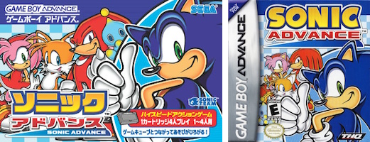
Sonic Advance started its life for the Game Boy Advance in December 20th 2001 in Japan and the rest of the world in 2002, developed by Sonic Team and Dimps.
It was published and released by Sega in Japan, while THQ released it in North America and Infogrames in Europe.
This version features game modes unique to this version. You can find the different game modes down-below.
Unique game modes
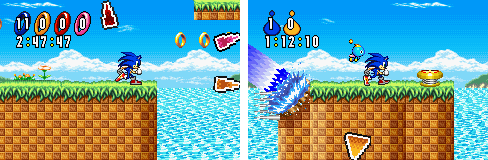
MULTIPLAYER MODE (VS):
The original Sonic Advance offers multiple game modes for up to four players using Game Link Cables.
VS mode has 3 different game modes: Race, Chao Hunt and Collect the Rings.
During gameplay, each player's location is marked for everyone by colored cursors.
RACE:
The objective in Race is to reach the Zone's Clear Panel within ten minutes and faster than anybody else.
All the two-Act Zones are available from the start.
CHAO HUNT:
In Chao Hunt, the objective is to find and catch as many Chao in the Act as possible.
The player with the most Chao when time runs out wins, with rounds lasting three minutes for individual play and five minutes for team play.
For team play, the team with the greater number of Chao total wins.
COLLECT THE RINGS:
In Collect the Rings, the player who collects the most scattered Ring throughout the separated Neo Green Hill Zone Act within three minutes wins.
Tiny Chao Garden
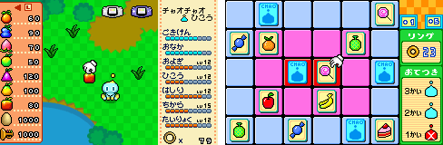
The Tiny Chao Garden is a simulation minigame where players can raise Chao.
It is similar to the Chao Garden, but with more limitations: Chao do not age, can only interact with a finite number of items, and there can never be more than one Chao in the Garden at a time.
Players can link the Tiny Chao Garden to the Chao Gardens in Sonic Adventure DX: Director's Cut and Sonic Adventure 2: Battle to transfer Chao or items and to participate in races.
When first coming to the Tiny Chao Garden, only a solitary egg can be found, which will hatch into a Chao.
A new egg can be only stored there as soon as there is no Chao in it.
The player can use the Rings collected in regular gameplay or two minigames (Card Matching and Rock Paper Scissor) to buy fruit and items to help nurture the Chao.
In the European version, while there are more languages available in the language option menu (French, German and Spanish), only the Tiny Chao Garden is translated in those additional languages.
Re-releases
Sonic Advance got re-released on June 17th 2004 exclusively in Japan as a discount version with an updated box artwork for ¥3,990.
Then, Sonic Advance was re-released in packs of games, such as:
- In a compilation with Sonic Pinball Party as part of the 2 Games in 1 series in Europe, remains the only compilation title from the "2 Games in 1" line to be released in United States as a Combo Pack.
The Tiny Chao Garden is featured separately.
- In a compilation with Sonic Battle and another with ChuChu Rocket as part of the 2 Games in 1 series in Europe and Double Pack in Japan.
Finally, Sonic Advance was re-released on the Wii U's Virtual Console on February 18th 2015 in Japan only for the price of ¥702.
External Links
N-Gage port
Description
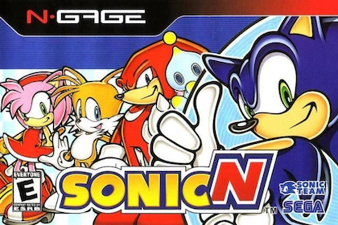
Sonic Advance on the N-Gage (also known as SonicN) is a port of Sonic Advance for the N-Gage handheld gaming mobile device.
The port was released in October 2003 in the United States, Europe and Australia as one of the handheld's launch titles.
This version of Sonic Advance is nearly identical to the Game Boy Advance version in terms of core gameplay.
Several features however, are removed from the port or adjusted to it due the technical limitations of the N-Gage.
This version of Sonic Advance supports 5 languages: English, French, German, Spanish and Italian.
There is no way to change the language in-game.
Instead, the language is automatically set based on the system language of the N-Gage.
Technical downsides
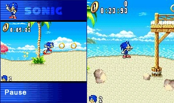
SCREEN RESOLUTION:
The unusual screen size of the N-Gage consists of a resolution of 176x208 and an aspect ratio of 11:13, which is smaller compared to the Game Boy Advance's 240×160 resolution and 3:2 aspect ratio.
Because of this, the game is somewhat tricky to play due the narrow screen view.
However, the game features separated letterboxed 2:9 mode with scaled-down graphics that the player can both enlarge or shrink by pressing [#], as this can be only done when the player has entered the level.
SOUND:
For unknown reasons, the sound of this port has a very-low quality and volume.
The sound volume can be adjusted anytime by pressing [0].
External Links
Gameloft ports
Description
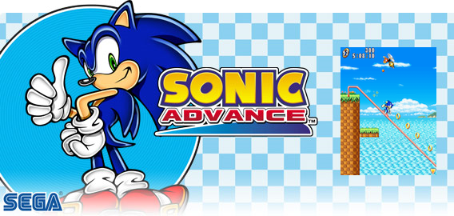
In 2011, Gameloft released a port of Sonic Advance for J2ME phones.
Multiple versions were made for different regions and different phones, but there are mainly 3 versions: short, medium and long versions.
However, all versions of the port have some common traits, such as Sonic being the only playable character, there are no Special Stages.
Long versions
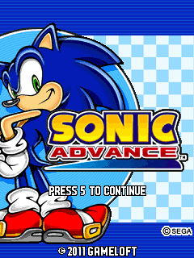
DESCRIPTION:
The long versions are made for devices with screen resolutions between 240x320 and 480x800.
The gameplay adapts the gameplay of the original Sonic Advance, albeit with certain changes and removals as a result of the technological limitations of J2ME devices.
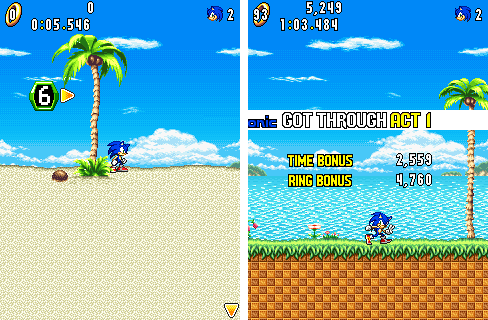
CONTROLS:
The game controls is quite similar to most other versions of Sonic Advance, but with a few differences.
First, pressing [1], [2] or [3] makes Sonic jump, and holding down [2] after a jump makes Sonic look up.
Next, while standing still, pressing [7] or [9] makes Sonic perform a Spin Dash to the left or right respectively.
However, some versions have touch controls for certain J2ME phone which support touchscreen functionalities.
Pressing UP on the circle pad makes Sonic jump, pressing DOWN-LEFT or DOWN-RIGHT makes Sonic perform a Spin Dash, and the attack button on the right makes Sonic perform the somersault and slide.
ZONES:
In these versions, only 4 zones were included, but the zone order is different from most other versions of Sonic Advance.
The zone order goes like this:
- Zone 1: Neo Green Hill Zone
- Zone 2: Secret Base Zone
- Zone 3: Angel Island Zone
- Zone 4: Casino Paradise Zone
MUSIC:
For the music, all music tracks are in .midi format and the invicibility theme is different from the Game Boy Advance and N-Gage version.
VERSIONS:
A Polish and a Chinese version were also released.
The Chinese version was released by China Mobile and MBIT.
This version replaced the simple command of the Spin Dash by holding down [8] on the number pad and then press [5] or the center key.
Additionally, the somersault and slide have been added by pressing the center key or [5] on the number pad.
The 640x360 versions have upscaled Sonic sprites.
Short versions
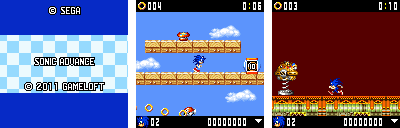
The short versions are made for mobile devices with a resolution of 128x128.
These versions are notably different from the original Sonic Advance.
Although it retains the same general gameplay and gimmicks, the Zone graphics and layouts are redesigned to work within the limitations of lower-end devices.
In terms of controls, the Spin Attack and the Air Dash are absent.
The Spin Dash can be performed by pressing the center key or the [5] on the number pad.
Most graphics are either scaled down from their original GBA sprites, or redesigned completely.
In terms of music, only the Neo Green Hill Zone music is present during stages.
Additionally, the short versions only have 2 zones (Neo Green Hill Zone and Secret Base Zone).
Although the Egg Press appears as a boss, the Egg Hammer Tank is absent.
Medium versions
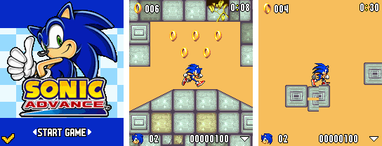
The medium versions are made for mobile devices with resolutions between 128x160 and 240x320.
In 128x160 devices, the game looks like the short versions.
But in higher resolution devices, the game uses familiar sprites from the original Sonic Advance.
These versions are nearly identical to the short versions, but they have an additional zone (Angel Island Zone).
However, the SonyEricsson W810i and 240x320 versions look, function and play like the long versions, despite being a medium version.
This is the only medium version where you can use the Spin Attack and Air Dash.
It is also the only medium version where the difficulty setting is present and you have to unlock each stage.
Additionally, the Egg Press boss battle appears at the end of Angel Island Act 2, instead of its own dedicated stage.
Android version
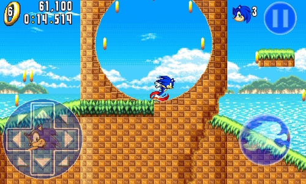
In 2014, Gameloft re-released their version of Sonic Advance on Android.
This port is nearly identical to the 480x800 J2ME version found on certain J2ME phones which support touchscreen functionalities.
Like the 480x800 J2ME versions, the game does not support multi-touch, making the controls a bit awkward to use.
This port has 7 languages: English, French, German, Italian, Spanish, Portuguese, Russian and Turkish.
When booting the game for the first time, the game automatically sets the languages based on your device language.
Strangely enough, when getting an extra life, the 1UP jingle is looping until another music track is played.
External Links
Japanese/Chinese Android port
Description
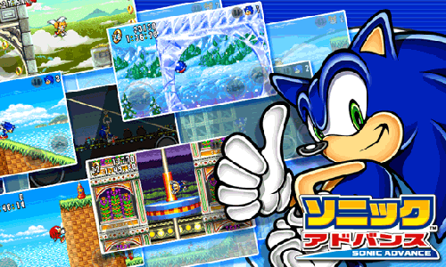
Sonic Advance got an Android port that was only released in Japan and Chinese Mainland.
The game itself is nearly identical to the Game Boy Advance version.
The graphics are upscaled from their original resolution, but the Android port is known for having a poor frame rate (roughly 12-15fps).
There are 3 known versions of this Android port: the 2011 version, the Chinese version (distributed by eGame), and the 2013 version (also known as Sonic Advance Lite).
2011 version
The first version was originally published on November 25th 2011 as a free Android application from the Android Marketplace (now known as Google Play).
It later became available through the Puyo Puyo! Sega subscription service in December 2011.
This version has a low-quality text and has a bug which soft-locks the game when exiting the application without closing or putting the device into sleep mode.
Chinese version (eGame)
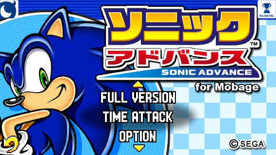
The Chinese version was released by a Chinese mobile service named eGame.
The release date of this version is unkown, but it is speculated to be released in 2011 or 2012, judging at some files in the game assets.
This version is actually the first version which features high-quality text (which is useful for Chinese text), and the soft-lock bug from the 2011 version has been fixed.
Additionally, unlike the other versions, this one features a different main menu, with UP and DOWN arrows to toggle between the different options.
This version initially requires payment to unlock subsequent content after completing the first stage of the game as Sonic only in TIME ATTACK mode.
However, the version archived on the Internet has been hacked to unlock the full-game after completing the first stage.
2013 version (Google Play)
In 2013, the Android port of Sonic Advance has gotten re-released in the Google Play Store as a part of the All-you-can-play! SEGA+ line of games.
This version is also known as Sonic Advance Lite.
While opening the application, you are granted with the All-you-can-play! SEGA+ login menu, but you were able to ignore this menu to proceed the game.
While this version has the same main menu layout as the 2011 version, it features 2 additional buttons.
The login button brings you back to the All-you-can-play! SEGA+ login menu, whereas the more games button leads you to an external site where you were supposed to find more games.
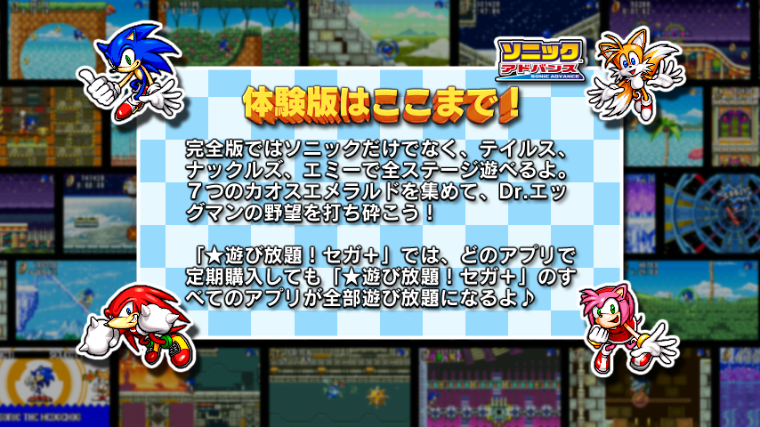
Like the Chinese version, this version initially requires payment to unlock subsequent content after completing the first stage of the game as Sonic only in TIME ATTACK mode.
However, it is accompanied with a nice-looking screen where you can either login to pay for the full-version, or going back to the main menu.
External Links